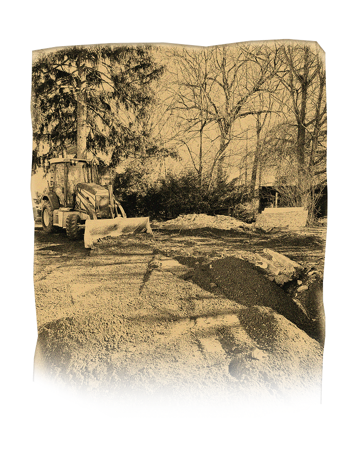

We successfully aced 60+ large-scale projects in the year 2024, and we’re just getting started..
Traditional demolition is dead. Deconstruction maximizes reuse and minimizes waste. Our strategy is simple: Dismantle the structure, salvage reusables, recycle debris, and prepare the site for the clients next purpose.
Lead exposure is a silent threat. Safe removal protects people and the planet. This strategy is simple too. Contain the hazard, extract toxic materials, dispose responsibly, and leave behind a clean, healthy space.
Pb
Asbestos doesn’t belong in the air you and I breathe. Proper removal ensures safety for everyone. At the risk of being cliche, this is also quite simple. Isolate, extract, filter, and restore a breathable environment.